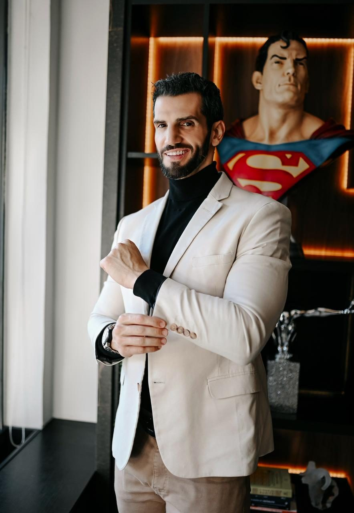
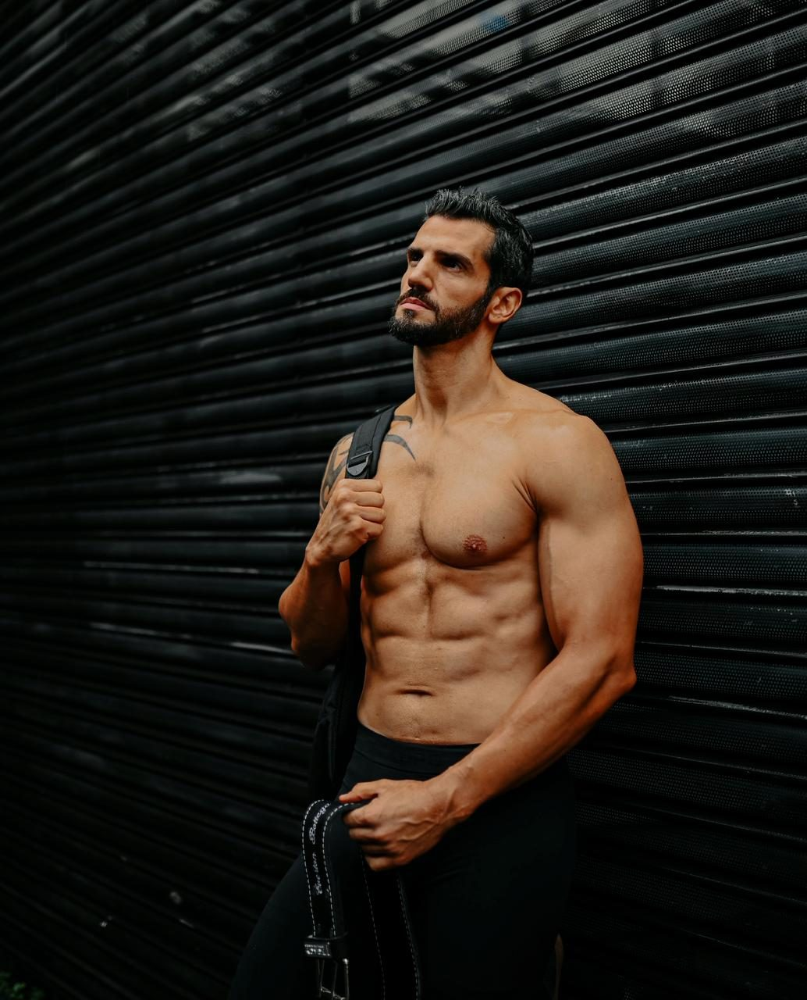
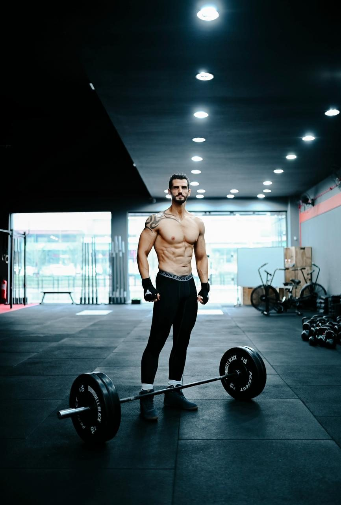
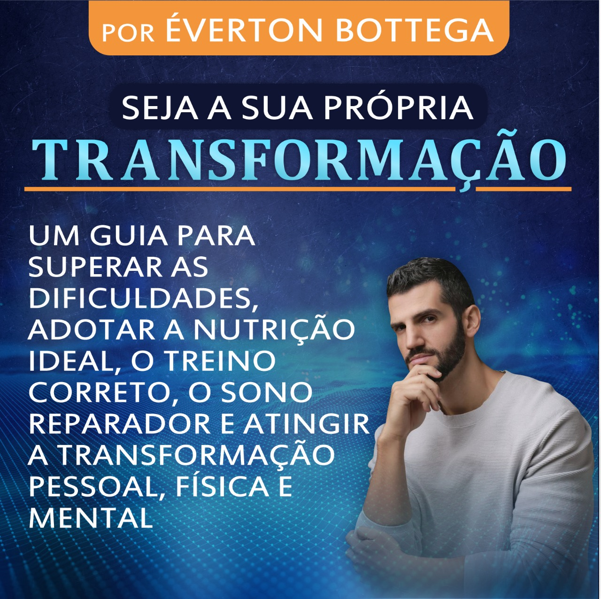
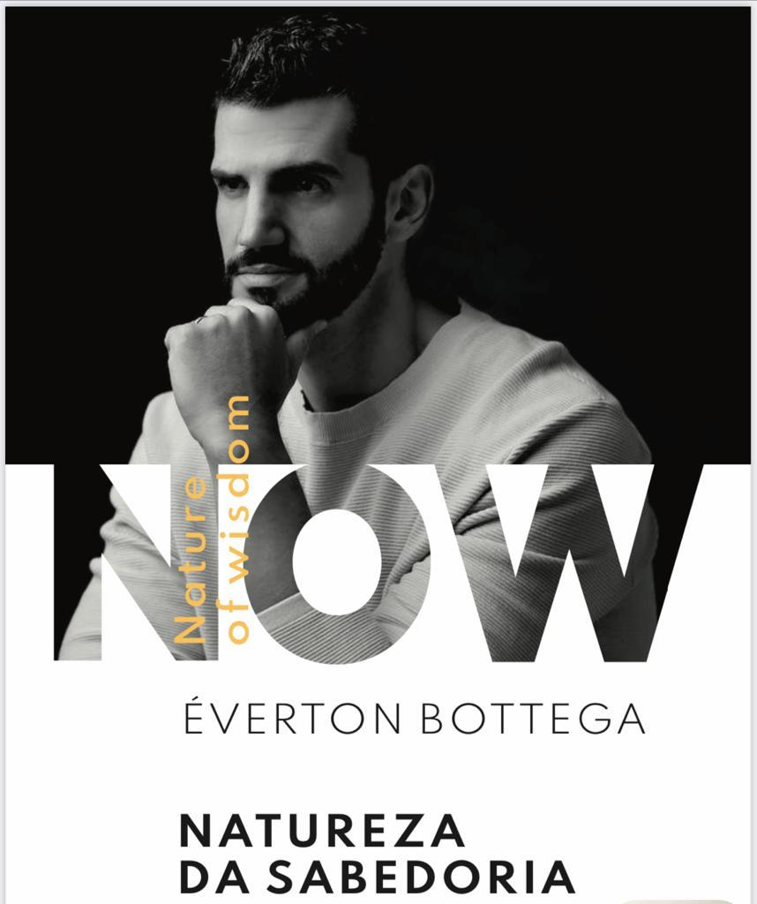
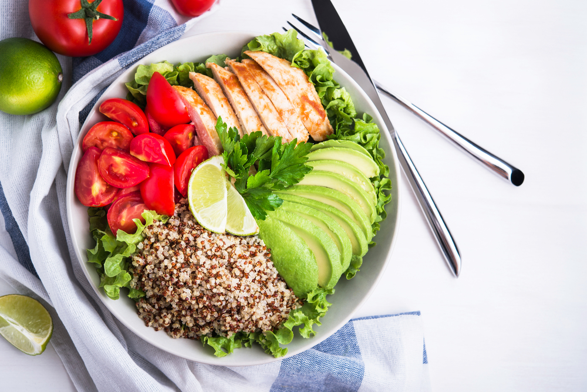
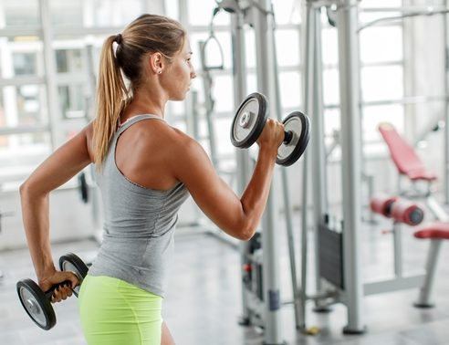

Avaliação e objetivo
Conversamos sobre a sua rotina, o seu histórico e o que você quer conquistar: emagrecer, ganhar massa muscular, melhorar a performance ou viver melhor por mais tempo.
Treinador e Nutricionista há mais de 15 anos transformando corpo e mente, para você viver com a sua melhor versão.
Três caminhos para você chegar ao seu objetivo, com acompanhamento de quem entende de corpo e mente.
Plano alimentar sob medida para a sua rotina, preferências e vida social, com treino alinhado à nutrição. Sem cardápio genérico e sem restrições malucas.
Clínica de Medicina e Nutrição Integrativa: análise metabólica e hormonal, avaliação de exames e acompanhamento com equipe multidisciplinar.
Perca até 8kg de gordura e aumente a sua massa muscular em 90 dias com o Método ATP3, passo a passo, no seu ritmo.



01Conversamos sobre a sua rotina, o seu histórico e o que você quer conquistar: emagrecer, ganhar massa muscular, melhorar a performance ou viver melhor por mais tempo.
Nutrição e treino desenhados juntos, com alimentos reais, horários que cabem na sua vida e nada de cardápio genérico.
Ajustes constantes, presencial em Porto Alegre ou on-line, para você manter o resultado e evoluir sem efeito sanfona.
“Ninguém transforma ninguém, sem antes ter se transformado. Não importa o que você sabe, mas sim o que você faz com o que você sabe.”
O Éverton Bottega atua há mais de 15 anos contribuindo com a transformação de centenas de pessoas. É referência nacional na área da saúde, no desenvolvimento humano e na nutrição esportiva.
Capacitado em Las Vegas e Londres pelo maior coach do mundo.
Formado em Educação Física e em Nutrição.
Formado pelo Instituto de Formação de Treinadores Comportamentais (IFT), pelo Instituto Brasileiro de Coach (IBC) e pelo Instituto Geronimo Theml (IGT), com formação em Programação Neurolinguística (PNL). Ex-atleta multicampeão de fisiculturismo.
Conheça a história →Programa, curso, guia e livro para quem quer aprender e evoluir no seu ritmo.
Perca até 8kg de gordura e aumente a sua massa muscular em 90 dias. O Método ATP3 em 3 fases, com encontros ao vivo todo mês, avaliação das suas medidas e plano específico para você.
O passo a passo para nutricionistas iniciantes decolarem suas carreiras em apenas um mês.

Um guia para superar as dificuldades, adotar a nutrição ideal, o treino correto, o sono reparador e atingir a transformação pessoal, física e mental.

Now – Nature of Wisdom. O guia completo para a sua jornada em busca da qualidade de vida e da autoestima.
Assuntos sobre nutrição, exercícios, suplementação, neurociência e inteligência emocional.

O hábito alimentar de muitas pessoas ao longo da vida, nem sempre é saudável.Muitas seguem uma rotina de alimentação ligada no piloto…
Ler artigoSabemos que a imunidade é um fator importante para a saúde física e mental, pois estando com esta elevada, o risco de ser infectado por algum…
Ler artigo
A maioria dos praticantes de musculação busca melhorar sua estética e consequentemente sua saúde, assim como as pessoas que apenas praticam um…
Ler artigoConte o seu objetivo pelo WhatsApp e receba a orientação de quem transforma corpo e mente há mais de 15 anos.
📍 R. Schiller, 40 - Rio Branco, Porto Alegre - RS, 90430-150
Atendimento presencial com horário agendado, de segunda a sexta. Também atendemos on-line.
Agendar Atendimento